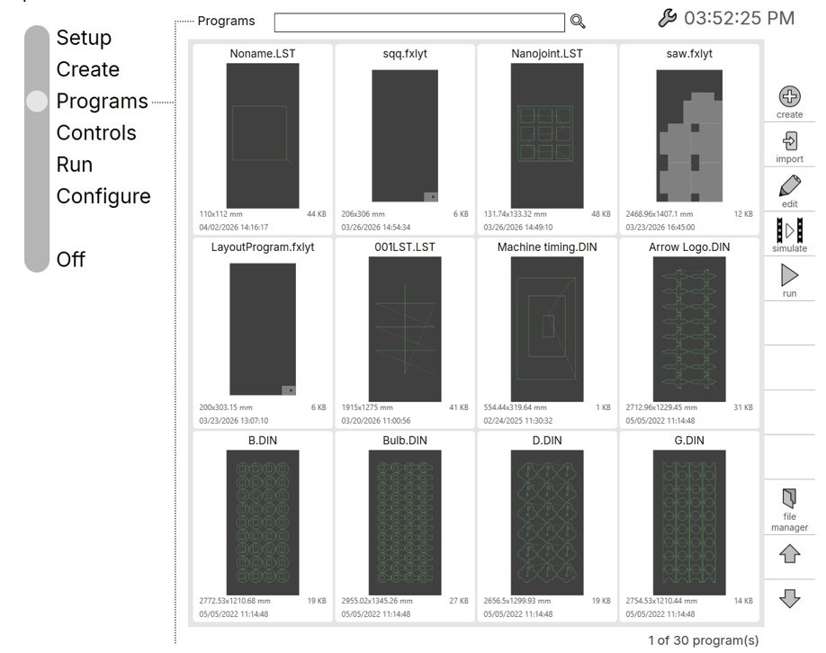
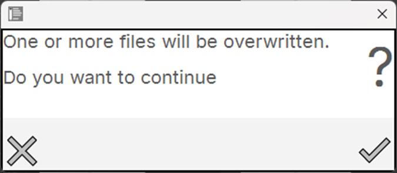
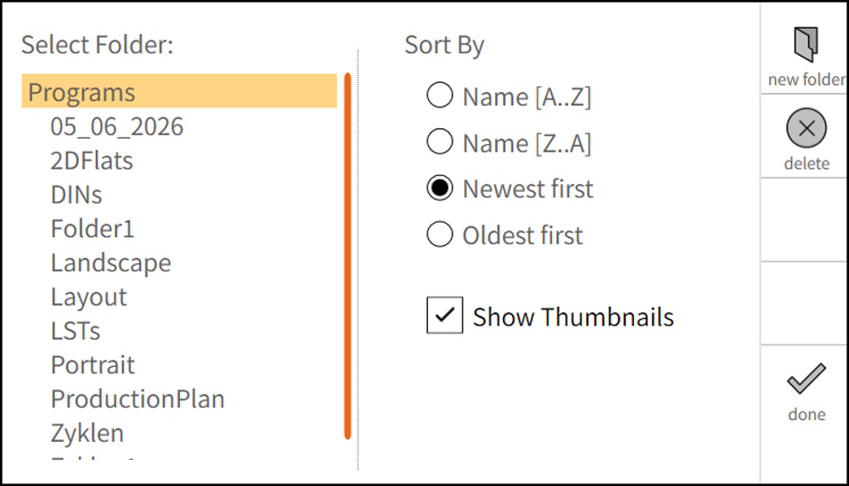

File Management
Import
To import files you could directly use the import button on the top right of the screen. It allows you to import with a minimal amount of clicks.

File manager
All other file operations are done using File Manager option (available on the right side of the screen).
The following functions are available in file operations:
-
Rename : This command allows you to change the name of the selected program. You can type-in the new name in the dialog that comes up.
-
Delete : Use this switch to delete the selected program.
-
Clone : This command allows you to make an exact copy of the program(s) you have selected. Select one or more programs and then press this button to create a copy of the selected program(s). When more than one program is cloned, you get a Clone files dialog which asks whether you want to clone the selected number of files. Once you press the OK mark the files are cloned. Generally, the name the cloned file will have a number after the part name separated by a tilde (e.g.in case, you clone a part named P5 then the name of the cloned part will be P5~1).
-
Export : When pressed, this command brings up the Export File dialog through which you pick the location to export the selected file(s).
-
Import : You can import program(s) by using this feature. This button brings up the Import Files dialog using which you can select one or more program or Direct program files to import. Once the files are selected press the OK mark in the dialog to import the file(s). If the name of the file(s) you try to import already exists, a warning message is displayed as seen in the picture below asking whether to replace the existing file(s). //This option is present outside of file manager menu.

-
Organize : Selecting on the programs header at the top opens this option. A dialog as shown in the picture below comes up when you press this button.

The edit page displays all the programs from the Programs folder. You can create folders and structure your data within this folder. You can create new folders using the new folder command. This will create a new folder within the Programs folder. To the left, you can see the Select Folder section which shows the directory structure. You can choose a folder from the tree and will display the contents of the selected folder in the edit page.
You can also sort the files in the folder by using the options provided under the Sort By section.
To sort by name in ascending choose Name [A..Z] and to sort by name in descending order choose Name [Z..A].
Newest first shows all the programs that were created recently and Oldest first displays the programs sorted in the ascending order of the created date.
Using the Show Thumbnails, you can turn ON or OFF the thumbnail display of the programs in the edit page. Use the delete button to remove a sub-directory.
| Only a sub-directory that is empty can be deleted. |
Press done to apply the changes and exit.